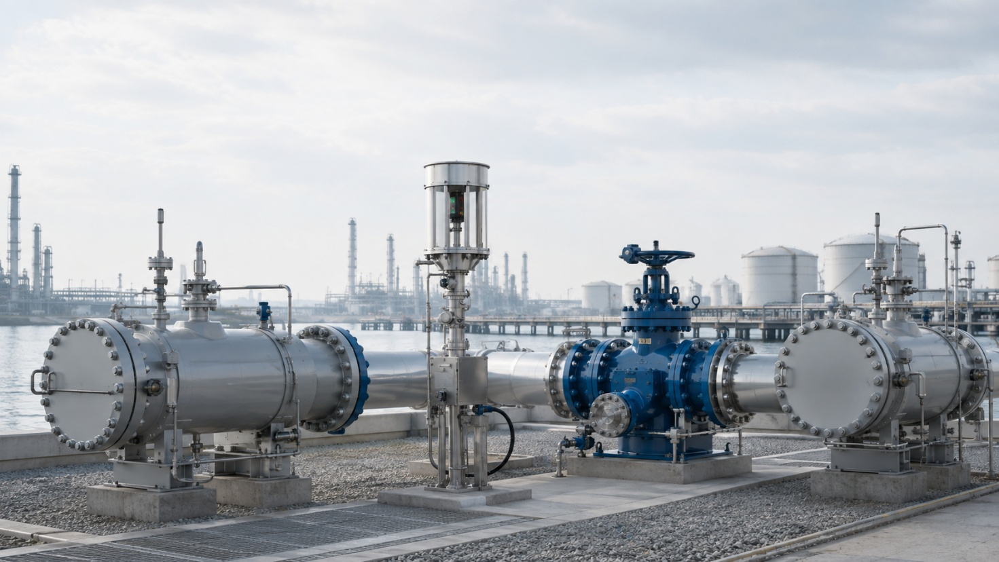
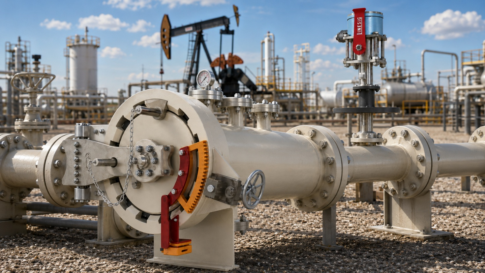
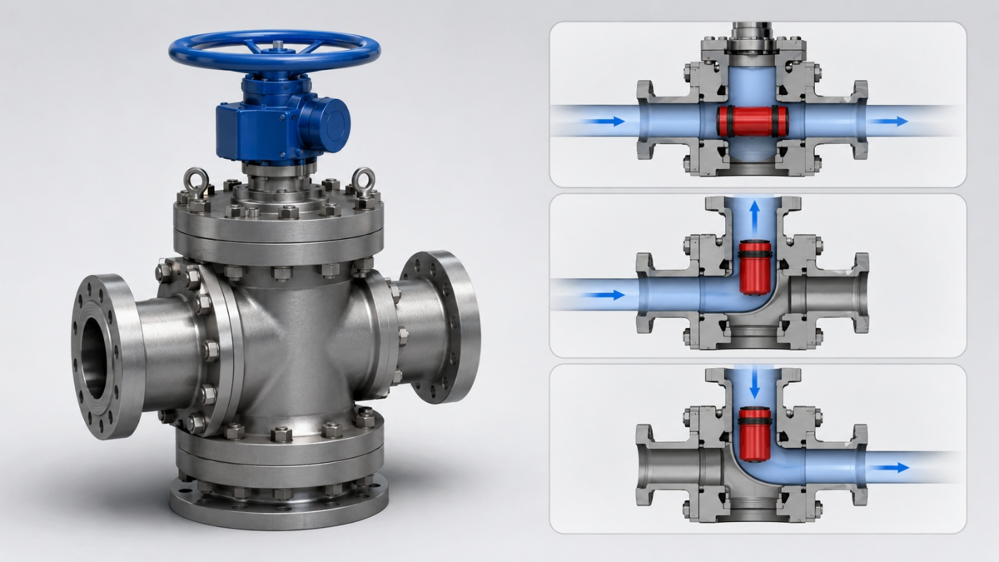
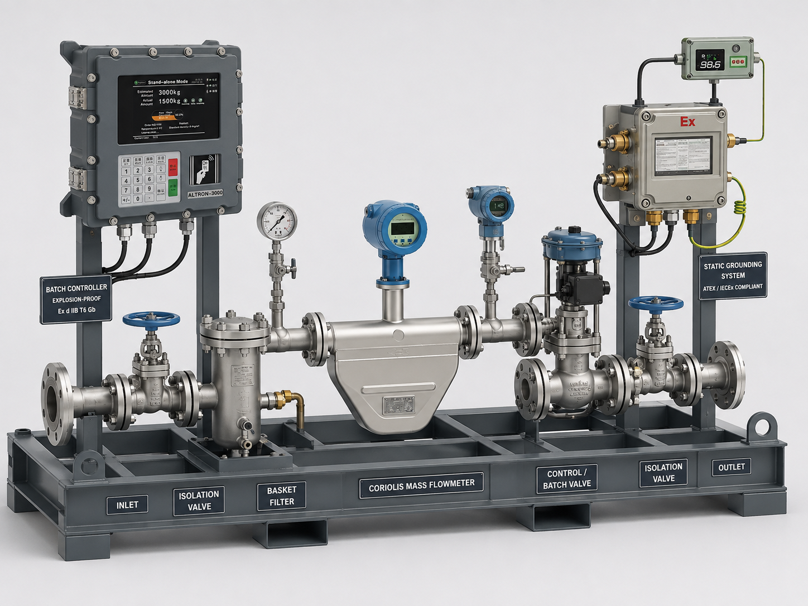
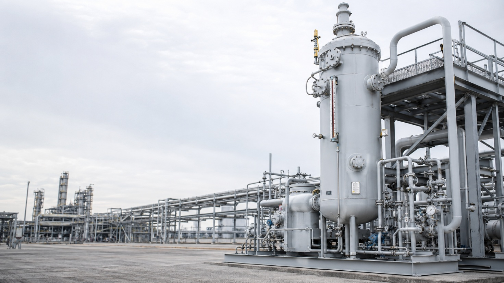

Pipeline integrity · process systems · engineered packages
LineSig designs and delivers engineered equipment and integrated systems for pipeline, terminal and process applications. Our portfolio includes pig launchers and receivers, pig signaling systems, pig valves and pipeline pigs, metering and dosing skids, scrubber packages and Vapour Recovery Units. Each solution is engineered for operational safety, process reliability and long-term performance.
What we build
From launching a pig into the line to signaling its arrival, every product on this page is built to work as one system.

LineSig Pig Launchers and Receivers are engineered as complete pipeline pigging stations for safe launching, receiving, isolation, depressurization and controlled handling of cleaning, batching and inspection pigs across oil, gas and refined-product pipelines. Heavy-duty pressure-retaining construction, quick-opening closure arrangements, drain and vent provisions, pig signal interfaces, isolation philosophy and project-specific materials allow each system to be configured for cross-country pipelines, terminals, refineries, marine facilities and transfer networks.
View product →
LineSig Bi-Directional Pig Signalers provide positive confirmation of pig passage in either pipeline direction and are available as Flag Type for local mechanical indication or Dual Type combining a mechanical flag with a digital electrical output for remote monitoring. Designed for installation on pig launchers, receivers and intermediate pipeline locations, the signalers support operator confirmation, PLC/SCADA event logging, sequence control and automated pigging functions.
View product →
LineSig Pigging Valves provide a compact multi-port solution for controlled routing of pipeline flow and pigs between selected pipeline branches, reducing the number of conventional valves, tees and manifold spools required in a traditional pigging station. Available in 2-way, 3-way and 4-way configurations with manual, electric, pneumatic or hydraulic operation, the LNS-WPV family is suited to oil, gas, fuel-terminal and process-pipeline applications requiring full-bore pig passage and positive directional control.
View product →Cleaning, gauging and inspection pigs sized and configured to your pipeline spec — supporting routine maintenance, pre-inspection cleaning and pipeline gauging runs across product and service types.
View product →
The LineSig LNS-MS Series combines skid-mounted metering, flow conditioning, batch control, safety interlocks and terminal automation for tanker loading of liquid hydrocarbons, fuel oils/base oils, LPG and LNG. Coriolis mass flow measurement is preferred where technically applicable, with product-specific filtration, pressure and temperature monitoring, FCV/batch control, explosion-proof batch controllers, static grounding, overfill protection, ESD interfaces and loading-arm or hose connections.
View product →LineSig LNS-DZ Series dosing skids are a modular family of skid-mounted systems for controlled chemical feed, additive injection, inline blending and process metering. Built on four pump technologies — centrifugal, diaphragm, piston/plunger and precision micro gear — each skid is engineered to the actual chemical, flow range and pressure duty, with application-matched instrumentation, pressure protection and PLC/DCS/SCADA integration for repeatable, traceable dosing across terminals, refineries and process plants.
View product →
LineSig Scrubber Systems are engineered process packages for removal of liquid droplets, entrained contaminants, aerosols or undesirable components from gas and vapour streams before downstream treatment, compression, venting or recovery. Configurations may incorporate vertical or horizontal separation vessels, demisting elements, level control, drains, pressure instrumentation, pumps, control valves and package automation.
View product →LineSig Vapour Recovery Units (VRU) are designed to collect and recover hydrocarbon vapours generated during tanker loading and terminal operations, reducing atmospheric emissions while improving product recovery and loading safety. For multi-tanker gantry systems, vapour from individual loading bays is routed through a common vapour-return header to a centralized recovery package incorporating separation, vapour conditioning, recovery equipment, instrumentation and control, allowing the VRU to operate as an integrated part of the loading rack with batch, ESD and terminal automation interfaces.
View product →Why LineSig
Every LineSig system is designed, fabricated and tested to keep pigging operations predictable — because an unplanned shutdown is never cheap. We work directly with your engineering team from spec to commissioning.
More about usTell us your pipeline parameters and we'll come back with a recommendation.
Contact our team